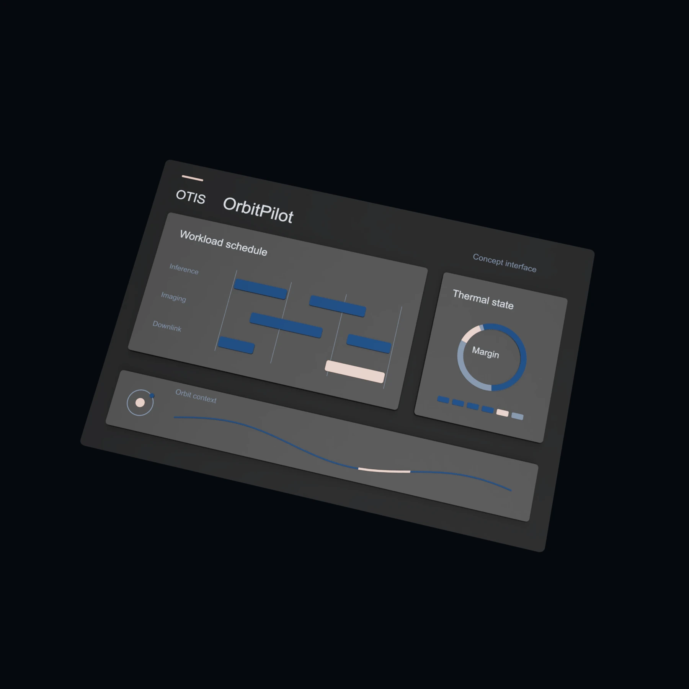

OrbitPilot
Workload control for spacecraft computing
We are developing OrbitPilot to schedule computing tasks around a spacecraft’s thermal limits, power availability, and mission priorities. The software is intended to help operators decide when a processor can run and when a task needs to wait.

Intended applications
OrbitPilot is intended for onboard processing with some flexibility in timing or power use, including image analysis and scheduled computing tasks. Its value will depend on the operating limits and scheduling freedom of each mission.
Design scope
State estimation
Combine temperature measurements, power availability, and workload requirements to estimate the capacity for additional computing.
Workload scheduling
Adjust task timing or processor power settings within the limits and control authority set by the spacecraft operator.
Ground evaluation
Compare proposed schedules with existing controls and inspect the conditions behind each scheduling decision.
Integration requirements
These inputs will determine the design and evaluation scope.
- Workload power profiles, task priorities, and deadlines.
- Temperature limits, available sensors, and the response of the cooling system.
- Battery constraints and electrical power available during each operating phase.
- Flight-computer interfaces, permitted control actions, and fallback behavior.
Development and evaluation
Initial product focus
The first evaluation will compare coordinated scheduling with a customer’s existing controls using the same workloads and mission limits. Relevant outcomes include completed tasks, missed deadlines, peak temperature, and energy use.
Testing also needs to cover uncertain forecasts, missing telemetry, and tasks that cannot be delayed. Flight integration and fault handling must be defined for each spacecraft.
Related products
Discuss OrbitPilot with our team
Share your workload profile, operating limits, and scheduling requirements.